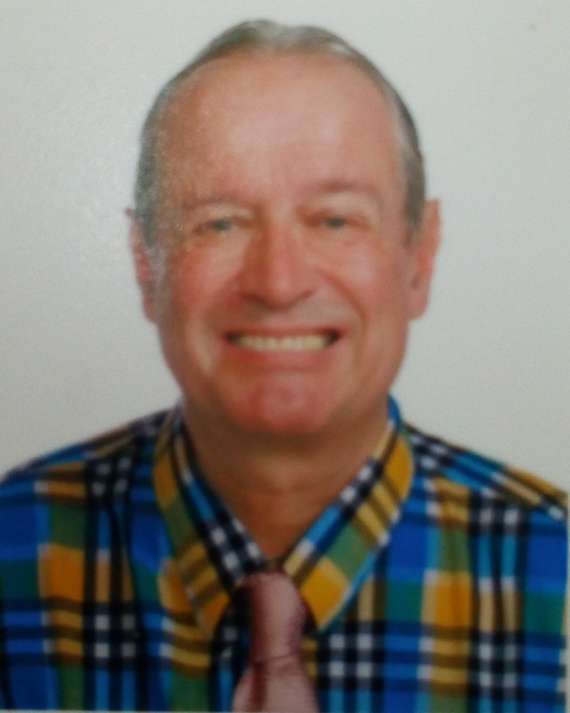

I have always been primarily a figurative artist, working in oil paint, fascinated by the challenges of painting people - Portraits, Nudes, Figure paintings - the possibilities are endless.
This website features an early portrait in oils 'Shaun' 1976 and much more recent portrait images of Kwan, made in Thailand over the past for years. My painting style has changed a lot in 38 years, not surprisingly.
I have also enjoyed working with Still Life imagery, my favourite painter is Matisse and I have tried to learn a lot from him. Many still life paintings were made in exotic locations around the world including; Sicily, Morocco, Vietnam, Thailand and West Africa, where I have been living for the past year and a half.
I have also been a landscape painter, inspired by the biggest skies, flat landscape and beaches of Norfolk where I lived from 2000 to 2009.
Living as I currently do in Togo, West Africa I have made a long series of sunset and skyscape paintings inspired by the brilliant light and colors of Africa. I have made 'Rainforest paintings' and paintings showing the sun setting over pink Flamingos on a small lake, an unforgettable sight here in West Africa. I have also made paintings inspired by visits to Ethiopia on the other side of the continent. Landing from a plane in Addis Ababa at 6 a.m in the morning the sky was a luminous pink and yellow that was almost fluorescent. My recent 'African paintings' are perhaps more abstract than my earlier work.

Nicholas Paterson